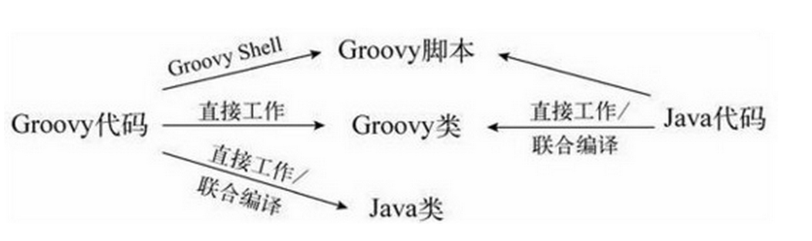

- 开发环境搭建
- groovy 中使用groovy类
- 利用联合编译使用混合使用Groovy和java
- 在Java中调用Groovy动态方法
- groovy中使用java
- groovy调用groovy脚本
- 从java中调用groovy脚本
在应用中，我们可以在一个Java类、一个Groovy类或者一个Groovy脚本中实现某个特定功能。之后可以在Java类、Groovy类或Groovy脚本中调用该功能。图10-1展示了混合使用Java类、Groovy类和Groovy脚本的各种选择
在groovy 使用groovy类，无需做什么，直接就可以工作。我们只需要确保所依赖的类在在类路径下，要么是源码，要么是字节码。
要再groovy类中执行groovy脚本，我们可以使用，groovyShell。
要在java类中使用groovy脚本，则可以使用ScriptEngine API。
如想在java中使用groovy类，或者在groovy类中使用java类，则可以使用groovy联合编译工具

开发环境搭建
- 使用maven管理项目
- 依赖最新版本groovy ，groovy-all
- 确保你的ide下载了groovy插件。本次使用idea开发
使用ide自动编译，可以帮我们省去很多手动编译的麻烦
groovy 中使用groovy类
在Groovy代码中使用一个groovy类，只需要确保该类在我们的classpath下。当我们在groovy代码中引用一个groovy类时，Groovy会以该类的名字，在我们的classpath下查找.groovy文件，如果找不到则以相同的名字查找.class文件
code
package com.xxx.groovy.service
import groovy.transform.TypeChecked
import groovy.transform.TypeCheckingMode
class GroovySerice {
@TypeChecked
def shoutString(String str) {
println "Printing in uppercase"
println str.toUpperCase()
println "Printing again in uppercase"
println str.toUpperCase()
}
@TypeChecked
def printInReverse(String str) {
println str.reverse()
}
@TypeChecked(TypeCheckingMode.SKIP)
def use(Object instance) {
if (instance instanceof String) {
println instance.length()
} else {
println instance
}
}
def pickEven(n, b, block) {//传递闭包
println b
for (int i = 0; i <= n; i += 2) {
block(i)
}
}
}
在另一个groovy类中调用groovy
package com.xxx.groovy.service
class RunGroovy {
private GroovySerice groovySerice = new GroovySerice()
public static void main(String[] args) {
new RunGroovy().groovySerice.shoutString("hello world")
}
}
利用联合编译使用混合使用Groovy和java
如果Groovy类是预先编译好的，那我们就可以方便地在Java中使用.class文件或JAR包。来自Java的字节码和来自Groovy的字节码，对Java而言没什么区别.
如果我们只有Groovy源代码，而非字节码，又会怎样呢？请记住，当我们的Java类依赖其他Java类时，如果没有找到字节码，javac将编译它认为必要的任何Java类。不过javac对Groovy可没这么友好。幸好groovyc支持联合编译.当我们编译Groovy代码时，它会确定是否有任何需要编译的Java类，并负责编译它们
public class AJavaClass {
{
System.out.println("Created Java Class");
}
public void sayHello() { System.out.println("hello"); }
}
//groovy
new AJavaClass().sayHello()
要联合编译这两个文件，我们输入这个命令：groovyc -j AJavaClass.java
UseJavaClass.groovy -Jsource 1.6。-Jsource 1.6会把可选的选项source = 1.6发送给Java编译器。使用javap检查生成的字节码，会发现AJavaClass作为一个普通的Java类
执行以下代码
java -classpath $GROOVY_HOME/embeddable/groovy-all-2.1.0.jar:. UseJavaClass
输入如下：
Created Java Class
hello
当然我们使用ide执行执行即可
在Java中调用Groovy动态方法
每个Groovy对象都实现了GroovyObject接口，该接口有一个叫作invokeMethod()的特殊方法。该方法接受要调用的方法的名字，以及要传递的参数。在Java这一端，invokeMethod()可以用来调用Groovy中使用元编程
创建一个Groovy类，其中包含一个特殊方法——methodMissing()，当某个不存在的方法被调用时，该方法会介入
class DynamicGroovyClass {
def methodMissing(String name, args) {
println "You called $name with ${args.join(', ')}."
args.size()
}
}
要从Java端调用我们期望的方法，可调用invokeMethod()，并将方法的名字和一个由参数组成的数组传给它
public class CallDynamicMethod {
public static void main(String[] args) {
groovy.lang.GroovyObject instance = new DynamicGroovyClass();
Object result1 = instance.invokeMethod("squeak", new Object[] {});
System.out.println("Received: " + result1);
Object result2 =
instance.invokeMethod("quack", new Object[] {"like", "a", "duck"});
System.out.println("Received: " + result2);
}
}
输出结果如下：
You called squeak with .
Received: 0
You called quack with like, a, duck.
Received: 3
当然我们亦可以把groovy脚本当成一个字符串传入：
//groovy 代码
package com.xxx.logclean.services
import com.google.common.collect.Lists
import org.slf4j.Logger
import org.slf4j.LoggerFactory
/**
* Created by hao.su on 15/11/23.
*/
public class GroovyServiceImpl implements IGroovyService {
private Logger logger = LoggerFactory.getLogger(GroovyServiceImpl.class);
@Override
Object execute(String groovyScript, Map params) {
Class<GroovyObject> groovyObjectClass = parseScript(groovyScript)
GroovyObject groovyObject
try {
groovyObject = groovyObjectClass.newInstance()
} catch (any) {
logger.error("error when execute groovyScript:{}", any)
throw new RuntimeException("error,when execute groovyScript", any)
}
ArrayList<String> list = Lists.newArrayList();
return groovyObject.invokeMethod("validate", [params, list] as Object[])
}
private Class<GroovyObject> parseScript(String script) {
GroovyClassLoader loader = new GroovyClassLoader();
Class<GroovyObject> clazz = loader.parseClass(script)
clazz
}
}
java 代码
public static void main(String[] args) {
Map<String, Object> map = Maps.newHashMap();
map.put("a", 1);
map.put("b", 2);
map.put("c", 3);
map.put("d", 4);
List<String> list = Lists.newArrayList(new String[]{"a", "b", "c"});
map.put("d", 5);
map.put("keys",list);
String groovyScript = "import java.util.regex.Matcher\n" +
"import java.util.regex.Pattern\n" +
"def validate(Map dataMap,List list) {\n" +
" def returnList = []\n" +
" List<String> keys = dataMap.get(\"keys\")\n" +
" for (key in keys) {\n" +
" if (dataMap.containsKey(key)) {\n" +
" String value = dataMap.get(key);\n" +
" if (key == \"userId\") {\n" +
" Pattern pattern = Pattern.compile(\"[0-9]*\")\n" +
" Matcher isNum = pattern.matcher(value);\n" +
" if (!isNum.matches()) {//过滤脏数据\n" +
" return []\n" +
" }\n" +
" }\n" +
" returnList.add(value)\n" +
" }\n" +
" }\n" +
" returnList\n" +
"}";
IGroovyService impl = new GroovyServiceImpl();
List<String> returnList = (List<String>) impl.execute(groovyScript, map);
for(String str:returnList){
System.out.println(str);
}
}
输出结果如下：
1
2
3
groovy中使用java
在Groovy中使用Java类简单且直接。如果我们想使用的Java类是JDK的一部分，可以像在Java中那样导入这些类或它们的包
如果想使用一个自己的Java类，或者不是标准JDK中的类，在Groovy中可以像在Java中那样导入它们。请确保导入了必要的包或类，或者使用类的全限定名来引用它们
public class GreetJava {
public static void sayHello() {
System.out.println("Hello Java");
}
}
UseGreetJava.groovy
//groovy
com.agiledeveloper.GreetJava.sayHello()
我们想从一个Groovy脚本中调用该方法，因此首先编译Java类GreetJava.
要运行该脚本，只需要输入groovy UseGreetJava。该脚本会顺利运行，并调用GreetJava类中的sayHello()方法
Hello Java
在这个例子中，我们显式地编译了Java代码，然后在Groovy脚本中使用了字节码。如果想显式地编译Groovy代码，不必分别编译Java和Groovy。可以使用联合编译代替